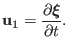

Next: Fourier transformation in time Up: Linearized ideal MHD equation Previous: Linearized ideal MHD equation
In dealing with the linear case of MHD theory, it is convenient to introduce the plasma displacement vector , which is defined through the following equation
|  | (27) |